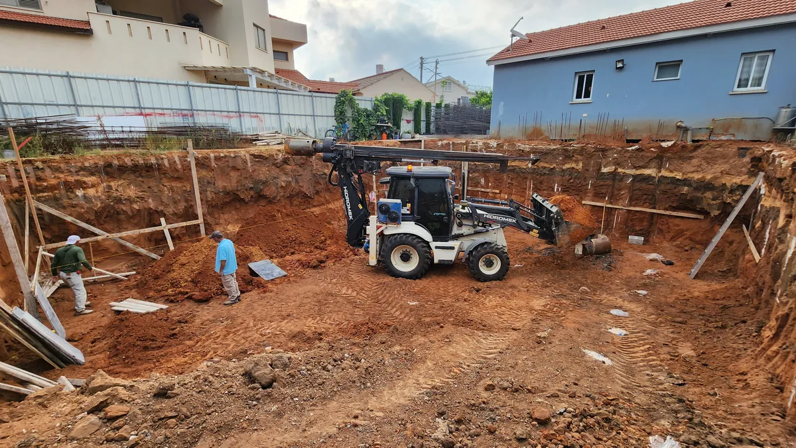
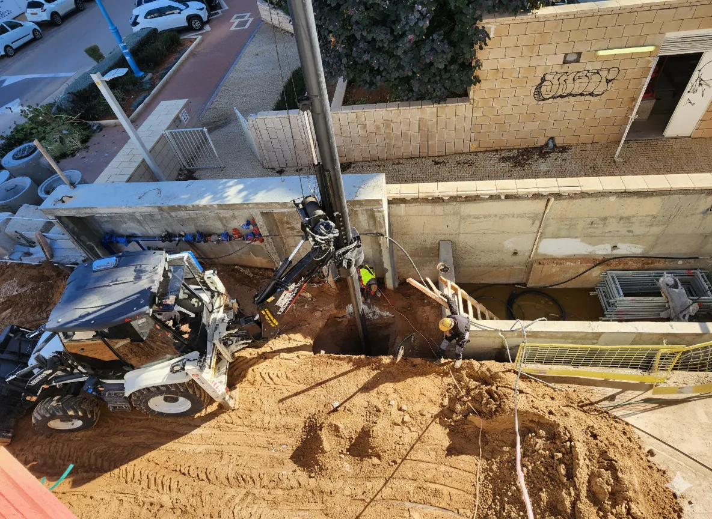
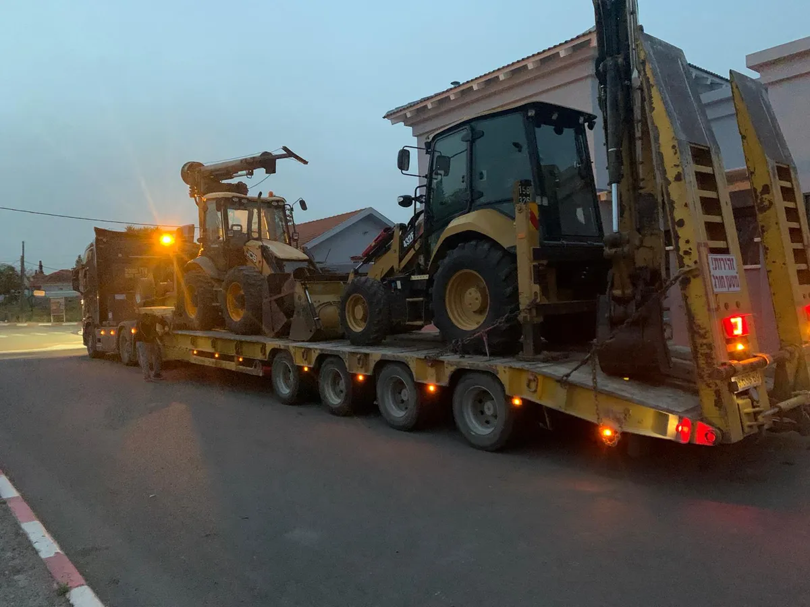

גלריית כלונסאות CFA





ביסוס מקצועי בשיטת CFA (Continuous Flight Auger) – קידוח רציף עד קוטר 80 ס"מ, ביצוע מהיר ואיכותי ללא רעידות. פתרון אידיאלי לסביבה עירונית צפופה עם צוות מנוסה וציוד מתקדם.
קבל הצעת מחיר
כלונסאות CFA (Continuous Flight Auger) הן שיטת ביסוס עמוק שבה מבצעים קידוח רציף באמצעות מקדח שבלולי (אוגר) חלול. לאחר שהמקדח מגיע לעומק הנדרש, מוזרם בטון דרך הליבה החלולה תוך כדי שליפת המקדח, ולאחר מכן מוכנס כלוב זיון לתוך הבטון הרטוב. זוהי שיטה יעילה ומהירה לביסוס מבנים, המתאימה במיוחד לסביבה עירונית הודות לרמת הרעש והרעידות הנמוכה.
לשיטת CFA מספר יתרונות משמעותיים: ביצוע מהיר במיוחד בהשוואה לשיטות ביסוס אחרות, עבודה שקטה ללא רעידות (מה שהופך אותה לאידיאלית באזורים עירוניים), אין צורך בשימוש בתמיסות ייצוב כמו בנטונייט או פולימר, מתאימה למגוון רחב של סוגי קרקע, עלות תחרותית לכלונס, ואיכות גבוהה של המוצר המוגמר. בנוסף, השיטה מייצרת פחות פסולת ומזהמים בהשוואה לשיטות אחרות.
כלונסאות CFA מומלצות במיוחד כאשר נדרש ביסוס מהיר ויעיל, באזורים עירוניים צפופים שבהם יש רגישות לרעש ורעידות, בקרקעות חוליות עד חרסיתיות בינוניות, כאשר לוח הזמנים של הפרויקט צפוף, ובפרויקטים שדורשים כמות גדולה של כלונסאות. השיטה מתאימה לביסוס מבני מגורים, מבנים מסחריים, מבני תעשייה ותשתיות כגון גשרים וקירות תומכים.
בכלונסאות CFA, הקידוח מתבצע באמצעות מקדח שבלולי רציף ללא צורך בתמיסת ייצוב – הקרקע נשארת על כנפי המקדח ומייצבת את דפנות הבור. הבטון מוזרם מיד תוך כדי שליפת המקדח. בכלונסאות בנטונייט, לעומת זאת, הקידוח מתבצע תוך מילוי הבור בתמיסת בנטונייט שמייצבת את הדפנות, ולאחר מכן מוכנס כלוב הזיון ומבוצעת יציקת בטון. CFA מתאימה לקטרים עד 80 ס"מ ועומקים בינוניים, בעוד שיטת הבנטונייט מאפשרת קטרים גדולים יותר (עד 120 ס"מ) וקידוחים עמוקים יותר.
זמן הביצוע של כלונס CFA בודד תלוי בעומק, בקוטר ובתנאי הקרקע. בממוצע, קידוח כלונס בעומק של 15-20 מטר אורך כ-30-60 דקות, כולל שלבי הקידוח, יציקת הבטון והכנסת כלוב הזיון. ביום עבודה ממוצע ניתן לבצע בין 8 ל-15 כלונסאות, בהתאם לתנאי האתר. מהירות הביצוע הגבוהה היא אחד היתרונות הבולטים של שיטת CFA לעומת שיטות ביסוס אחרות.
כלונסאות CFA (ראשי תיבות של Continuous Flight Auger – מקדח שבלולי רציף) הן אחת משיטות הביסוס העמוק הנפוצות והמתקדמות ביותר בעולם הבנייה המודרני. השיטה פותחה באירופה בשנות ה-70 וזכתה לפופולריות רבה בזכות מהירות הביצוע, האיכות הגבוהה והעלות התחרותית שלה. בישראל, שיטת CFA הפכה לאחת משיטות הביסוס המבוקשות ביותר, במיוחד בפרויקטי בנייה עירוניים.
מבחינה טכנית, כלונס CFA מבוצע באמצעות מכונת קידוח ייעודית המצוידת במקדח שבלולי (אוגר) רציף עם ליבה חלולה. קוטר המקדח נע בין 30 ס"מ ל-80 ס"מ, והעומקים המקובלים נעים בין 8 מטרים ל-25 מטרים, בהתאם לתנאי הקרקע ולדרישות ההנדסיות של הפרויקט. המקדח מסתובב ונכנס לקרקע ברציפות, כאשר הקרקע נאגרת על כנפי הספירלה ומונעת קריסת דפנות הבור – ללא צורך בתמיסת ייצוב כלשהי.
כלונסאות CFA מיוצרות בדרך כלל מבטון B30 ומעלה, עם שלד זיון (כלוב ברזל) המותאם לעומסים המתוכננים. לחץ הזרמת הבטון נע בין 3 ל-8 בר, ומנוטר באופן רציף באמצעות מערכת מחשוב מתקדמת המותקנת על המכונה. מערכת זו מאפשרת מעקב בזמן אמת אחר עומק הקידוח, מהירות ההזרמה, לחץ הבטון וכמות הבטון ביחס לעומק – מה שמבטיח איכות אחידה של כל כלונס.
תהליך ביצוע כלונס CFA כולל מספר שלבים מוגדרים היטב, כל אחד מהם קריטי לאיכות המוצר הסופי:
שלב 1 – הכנת האתר וסימון: לפני תחילת הקידוח, מסומנות נקודות הכלונסאות על פי תוכנית הביסוס של המהנדס. מכונת הקידוח ממוקמת במדויק מעל כל נקודה באמצעות מערכת GPS או מדידה ידנית. האתר מפונה ממכשולים ומוכן לקליטת הציוד.
שלב 2 – קידוח: המקדח השבלולי מתחיל להסתובב ולחדור לקרקע ברציפות. הקרקע המופרשת עולה על כנפי הספירלה ונאגרת סביב פתח הבור. מהירות הקידוח מותאמת לסוג הקרקע – מהירה יותר בקרקעות רכות ואיטית יותר בשכבות קשות. לאורך כל הקידוח, המערכת המחשוב מנטרת את העומק, מומנט הסיבוב ולחץ ההזנה.
שלב 3 – הזרמת בטון: כאשר המקדח מגיע לעומק הנדרש, מתחילה הזרמת בטון דרך הליבה החלולה של המקדח תוך כדי שליפתו כלפי מעלה. תהליך זה הוא הליבה של שיטת CFA – הבטון ממלא את החלל שנוצר מיד עם שליפת המקדח, ובכך מונע כל אפשרות לקריסת דפנות. קצב השליפה ולחץ הבטון מתואמים בקפידה כדי להבטיח מילוי מלא ואחיד.
שלב 4 – הכנסת כלוב זיון: מיד לאחר השלמת היציקה, מוכנס כלוב ברזל (שלד זיון) מוכן מראש לתוך הבטון הרטוב. הכלוב שוקע בכוח משקלו העצמי או בעזרת לחץ עדין מהמכונה. אורך הכלוב ומפרט הזיון נקבעים על ידי המהנדס המתכנן בהתאם לעומסים הצפויים.
שלב 5 – בקרת איכות: לאחר השלמת הכלונס, מבוצעות בדיקות איכות הכוללות ניתוח נתוני הקידוח ממערכת המחשוב, בדיקת תקינות הבטון, ובמידת הצורך בדיקות עומס סטטיות או דינמיות.
כדי להבין מתי שיטת CFA היא הבחירה הנכונה, חשוב להשוות אותה לשיטות ביסוס עמוק אחרות הנפוצות בישראל:
| פרמטר | כלונסאות CFA | כלונסאות בנטונייט | כלונסאות מרוטות (Driven) |
|---|---|---|---|
| קוטר מרבי | עד 80 ס"מ | עד 120 ס"מ ומעלה | עד 60 ס"מ |
| עומק מרבי | עד 25 מטר | ללא הגבלה מעשית | עד 20 מטר |
| מהירות ביצוע | מהיר מאוד | בינוני | מהיר |
| רמת רעש ורעידות | נמוכה | נמוכה | גבוהה מאוד |
| צורך בתמיסת ייצוב | לא נדרש | כן – בנטונייט/פולימר | לא נדרש |
| פסולת ומזהמים | מעט | תמיסה משומשת | מעט |
| התאמה לעיר | מצוין | טוב | בעייתי |
| התאמה לקרקע קשה | בינוני-טוב | מצוין | מוגבל |
כלונסאות CFA נמצאות בשימוש נרחב במגוון תחומי הבנייה והתשתיות בישראל, הודות לגמישות ולמהירות הביצוע שלהן:
מבני מגורים: כלונסאות CFA משמשות לביסוס בנייני מגורים מכל סדר גודל – החל מווילות פרטיות ועד בנייני רבי-קומות. השיטה מתאימה במיוחד לפרויקטים עירוניים שבהם יש מבנים סמוכים, שכן היא אינה גורמת לרעידות העלולות לפגוע במבנים שכנים. ביסוס בשיטת CFA מבטיח יסודות יציבים שנושאים את עומסי המבנה בביטחון.
מבנים מסחריים ותעשייתיים: מרכזי מסחר, משרדים, מפעלים ומחסנים – כולם דורשים ביסוס אמין ועמיד. כלונסאות CFA מספקות פתרון אידיאלי לפרויקטים מסחריים הודות ליכולת לבצע כמות גדולה של כלונסאות ביום עבודה אחד, מה שמקצר משמעותית את לוח הזמנים הכולל של הפרויקט ומאפשר לקבלן הבנייה להתקדם מהר יותר לשלב העליון.
תשתיות וגשרים: בפרויקטי תשתית כמו גשרים, מעברים תת-קרקעיים, קירות תומכים ומערכות תחבורה, כלונסאות CFA משמשות לביסוס עמודים, כתפיים ותומכות. היכולת לעבוד בסמוך לתשתיות קיימות ללא רעידות היא יתרון קריטי בפרויקטים אלו, במיוחד כאשר נדרש לעבוד ליד מסילות רכבת, כבישים פעילים או צנרת תת-קרקעית.
פרויקטים מיוחדים: כלונסאות CFA משמשות גם ביישומים מיוחדים כגון ביסוס מנופים, עיגון קירות תמך, ביסוס מבנים זמניים, חיזוק יסודות למבנים קיימים ועוד. הגמישות של השיטה מאפשרת התאמה למגוון רחב של אתגרים הנדסיים.
א.א. עבודות קידוחים ופיתוח היא חברה מובילה בתחום הביסוס והקידוחים, עם ניסיון מוכח של מעל 10 שנים בביצוע כלונסאות CFA ושיטות ביסוס נוספות. אנחנו קבלן רשום מספר 36281, עם כל האישורים, הביטוחים והרישיונות הנדרשים לביצוע עבודות ביסוס ברמה הגבוהה ביותר.
הציוד שלנו כולל מכונות קידוח CFA מתקדמות עם מערכות ניטור ובקרה ממוחשבות, המבטיחות דיוק מרבי ואיכות אחידה בכל כלונס. צוות העובדים שלנו מורכב מאנשי מקצוע מוסמכים ומנוסים, שעברו הכשרה מקצועית ועובדים לפי כל תקני הבטיחות המחמירים.
אנו מתחייבים לעמידה בלוחות זמנים, איכות ללא פשרות, ושירות אמין ומקצועי מהרגע הראשון ועד להשלמת הפרויקט. הלקוחות שלנו כוללים חברות בנייה מובילות, קבלני תשתיות, רשויות מקומיות ולקוחות פרטיים ברחבי מרכז והצפון. כל פרויקט מתחיל בייעוץ מקצועי חינם ובהתאמת הפתרון המדויק לצרכים שלכם.
השאירו פרטים ונחזור אליכם בהקדם עם הצעה מותאמת
השאירו פרטים ונחזור אליכם תוך שעות ספורות